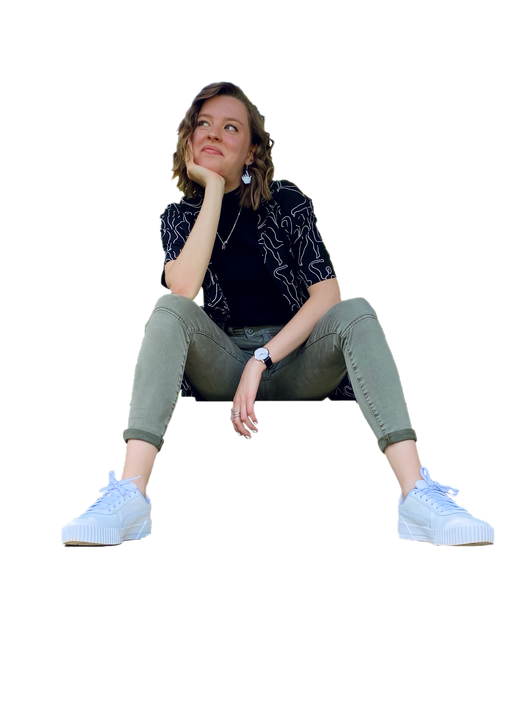
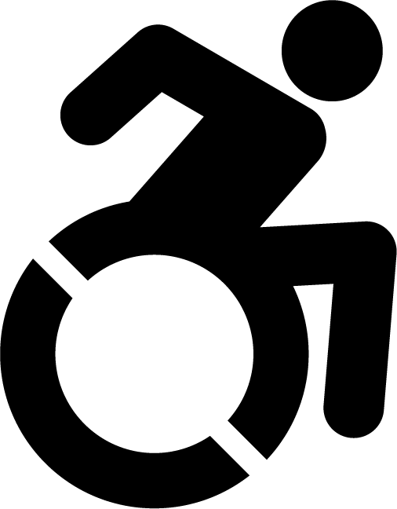
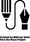

Digital Narrative and Interactive Design Student
I'm a junior at the University of Pittsburgh, majoring in Digital Narrative and Interactive Design on the Online Media track. My education involves a hybrid focus between the writing and design skills that go into creating digital content, as well as the coding and data analysis skills to build the software that can display said content.
From the very start of pursuing this major, my passion has been making my work accessible. I have supplemented my courses with readings about disability-related design and have sought out tools that allow me to check if my projects are inclusive to the disability community.
My skillset currently includes Photoshop, Illustrator, InDesign, and Audacity. But I'm always looking to expand. Over the summer, I took a formal typography course with Rhode Island School of Design to supplement the design education at Pitt.
I can speak HTML, CSS, and Python.
let's get in touch.
cap189@pitt.edu
download my resume here.
icon credits
design by Nithinan Tatah from the Noun Project for pen design, coding by Ahmad Roaayala from the Noun Project for coding design, https://accessibleicon.org/#use for ISA icon